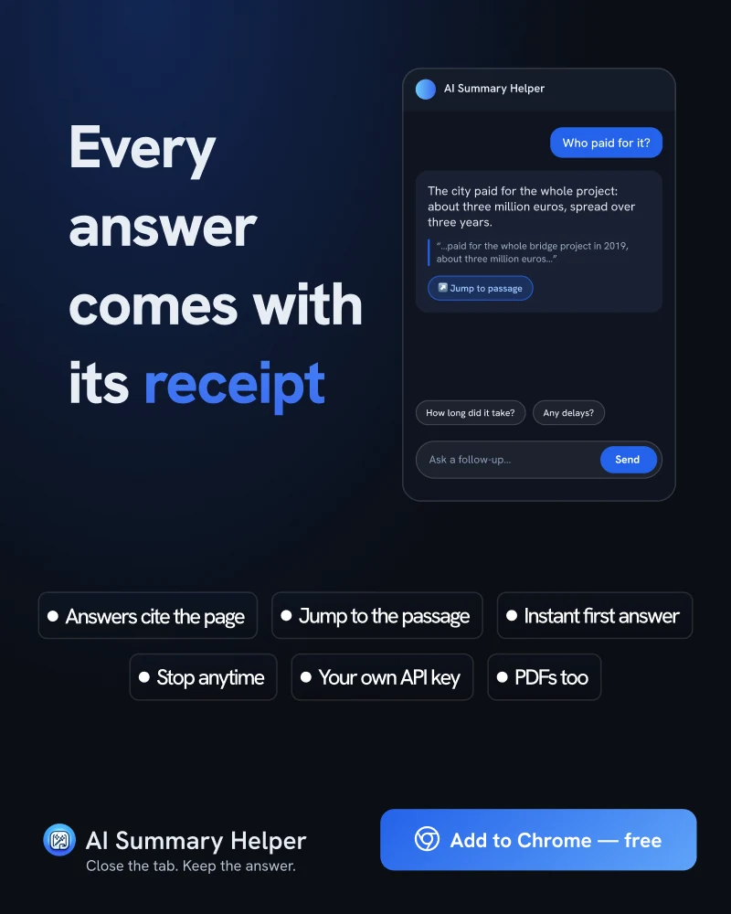

Sådan tjekker du et AI-resumé mod dets kilde på 10 sekunder
Et resumé, du ikke kan efterprøve, er blot et gæt med god grammatik. Her er vanen, der løser det, og hvordan AI Summary Helper gør det lynhurtigt.
I 2011 påviste Sparrow, Liu og Wegner i Science at når folk forventer at kunne slå noget op senere, husker de selve faktaene dårligere og i stedet hvor de finder dem. Søgemaskiner viste sig at fungere som en slags ekstern hukommelse, og vi tilpasser os.
AI-resuméer tager den tilpasning et skridt videre. Du får et pænt afsnit, husker afsnittet, og den oprindelige side forsvinder ud af billedet. Det fungerer fint, når resuméet er korrekt. Men det bliver et problem, når det ikke er, for intet i teksten afslører, hvilken sætning der halter.
10-sekunders-tjekket
Du behøver ikke genlæse hele artiklen. Du skal blot kigge på én passage. Vanen er enkel:
- Vælg den påstand, du ville genfortælle til andre. Et tal, en dato, et navn, en årsag.
- Find sætningen i kilden, der bekræfter det. Ikke en lignende sætning. Den specifikke sætning, der slår det fast.
- Læs sætningen lige før og efter. Det er i konteksten, resuméer oftest fejler: et "kan", der blev til et "vil", eller en prognose, der blev udlagt som en kendsgerning.
Trin to tager tid, hvis du gør det manuelt. Det er netop det trin, der er værd at automatisere.
Hvad AI Summary Helper gør ved det
Når du stiller et opfølgende spørgsmål, leveres svaret sammen med de præcise tekststeder fra siden, der underbygger det. Udvidelsen sammenligner hvert citat med sidens faktiske tekst og frasorterer alt, der ikke matcher ordret, så et opdigtet citat aldrig fremstår som bevis. Klikker du på et citat, ruller siden automatisk hen til passagen og fremhæver den, hvis siden er åben.
De foreslåede opfølgende spørgsmål fungerer på samme måde. Hvert spørgsmål vises med et kort første svar, mens modellen udformer det længere svar – så du lynhurtigt kan læse, tjekke og stoppe op, så snart du har fået svar.

Hvad et citat beviser – og hvad det ikke gør
Pas på her: Et matchende citat beviser kun, at passagen findes på siden. Det beviser ikke, at modellen forstod den korrekt. Teksten rundt om citatet er stadig modellens egne ord, så tjekket i trin tre gælder stadig: Læs de omkringliggende sætninger.
Brugt på den måde er citatet en genvej til det rigtige afsnit frem for et kvalitetsstempel. Det er hele pointen: Du bruger ti sekunder på den del af artiklen, der afgør, om svaret holder – ikke ti minutter på at læse det hele igennem.
En god vane at holde fast i
Vælg ét svar pr. artikel og efterprøv det. Efter et par uger lærer du, hvordan din model opfører sig: Hvilke emner den mestrer, hvor den runder tal af, og om den overser forbehold. Den fornemmelse er langt mere værd end et enkelt tjek.
AI Summary Helper er en gratis Chrome-udvidelse.
Tilføj til Chrome